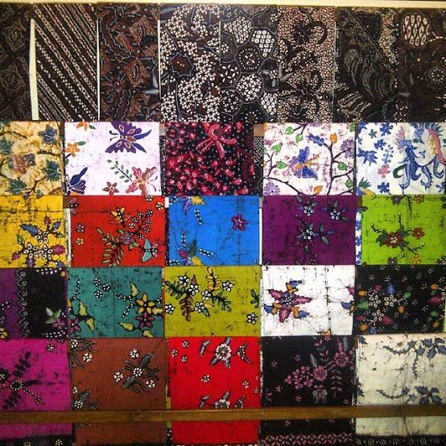

Kerajinan
Batik Bakaran
📍 Desa Bakaran, Kecamatan Juwana
Batik khas Pati yang dikenal dengan teknik batik tulis dan motif remekan. Kerajinan ini menjadi salah satu warisan budaya yang mencerminkan identitas masyarakat Bakaran.
Lihat Detail →